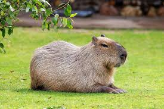

Капібара

Капібари мають міцне, компактне тіло, яке досягає довжини до 130 сантиметрів, а їхня вага може сягати 65 кілограмів. Їхня шкіра покрита жорстким, коротким хутром коричневого або червонувато-коричневого кольору. Морда капібари тупа, з великими очима та вухами.
Опис Капібари
Довжина тіла дорослої капібари сягає 1—1,35 м, висота в загривку — 50—60 см. Самці важать 34—63 кг, самиці — 36—65,5 кг[3]. Самиці, зазвичай, більші за самців. Статура важка. Зовні капібара нагадує велетенську морську свинку. Голова велика, масивна, з широкою, тупою мордою. Верхня губа товста. Вуха короткі, палі (третій палець найдовший), задні — трипалі. Пальці сполучені невеликими плавальними перетинками й забезпечені короткими сильними кігтями. Тіло вкрите довгим (30—120 мм) жорстким волоссям; підшерсток відсутній. Забарвлення верхньої сторони тіла від рудувато-бурого або сіруватого, черева, як правило, жовтувато-буре. Молодняк забарвлений світліше. У статевозрілих самців на верхній частині морди розташована ділянка шкіри з численними крупними сальними залозами. У самиць 6 пар черевних сосків. Череп масивний, з широкими та сильними виличними дугами. Зубів 20. Різці широкі, мають подовжню борозенку на зовнішній поверхні[3]. Як і в інших гризунів, у капібари вони постійно ростуть, щоб компенсувати постійне зношування через поїдання трави[4]. Щокові зуби без коріння, ростуть протягом всього життя тварини[5]. Мала і велика гомілкові кістки частково зростаються між собою. Ключиці немає. Хромосом у диплоїдному наборі 66.
Походження,місце проживання і особливості
Капібара мешкає на берегах різноманітних водойм у тропічних і помірних частинах Південної Америки на схід від Анд — від Колумбії до Уругваю і північного сходу Аргентини (до 38°17' пд. ш., провінція Буенос-Айрес). Ареал включає басейни річки Ориноко, Амазонки і Ла-Плати. Основними чинниками, які обмежують розповсюдження, є температура повітря і води. У горах капібари зустрічаються до висоти 1300 м над рівнем моря[3]. У Панамі, північній Колумбії та північно-західній Венесуелі мешкає карликовий родич капібари — мала капібара (Hydrochoerus isthmius), що до 1991 року вважалася її підвидом. За розмірами мала капібара помітно менше звичайної. У викопному вигляді представники родини капібарових відомі з верхнього міоцену. Всі види родини були поширені виключно в Південній і Північній Америці[3].
Харчування
-
Трава
-
Листя
-
Кора
-
фрукти
-
цукрова тростина
Цікаві факти про капібар
-
Дуже багато людей знають Капібар з мемів
-
Капібара належить до родини гризунів званих Caviidae. Основні близькі родичі капібари включають гвінеїських свиней, морських свинок, а також роди Dasyprocta та Cuniculus, до яких відносяться агуті та пака. Всі ці тварини належать до порядку Rodentia, який є найбільш численним порядком ссавців у світі, представлений близько 40% всіх видів ссавців.
-
Часто плавають, тримаючи над водою лише ніздрі, очі та вуха. Вони також можуть пропливати під водою значні відстані.
-
Капібари надзвичайно товариські істоти і живуть групами, які можуть налічувати до 100 особин. У соціальній структурі домінує домінантний самець, а самки та молоді самці утворюють решту групи.
-
Капібара є найбільшим гризуном у світі. Дорослі капібари можуть виростати від 1,0 до 1,3 метра і важити до 79 кілограмів.
| Вага | Зріст | Вік |
|---|---|---|
| До 79 кілограмів | 1м до 1,3 метра | 7-12 років |